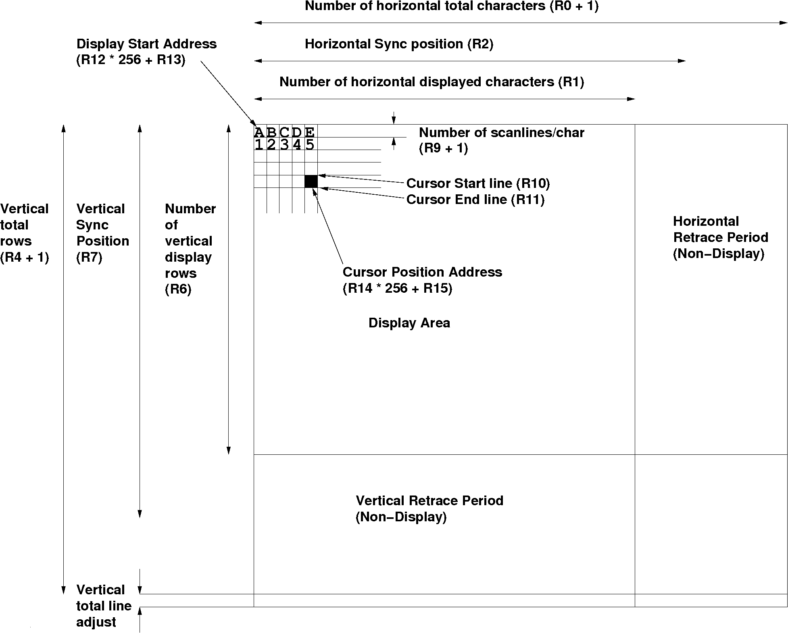
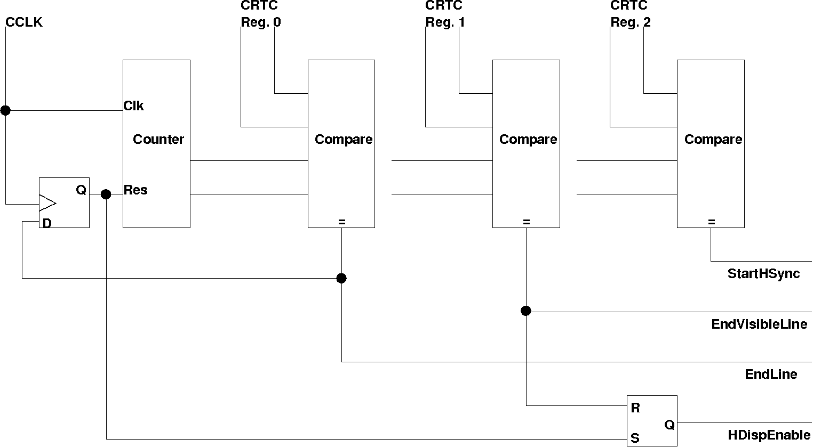
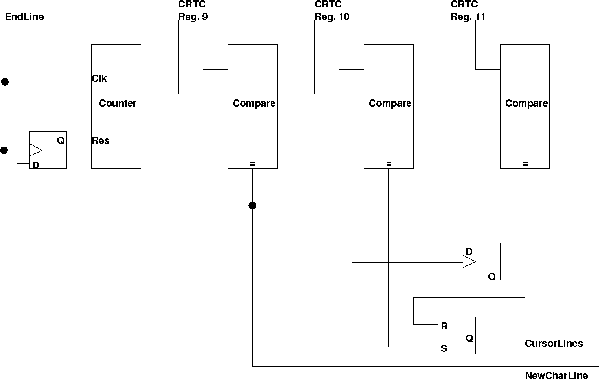
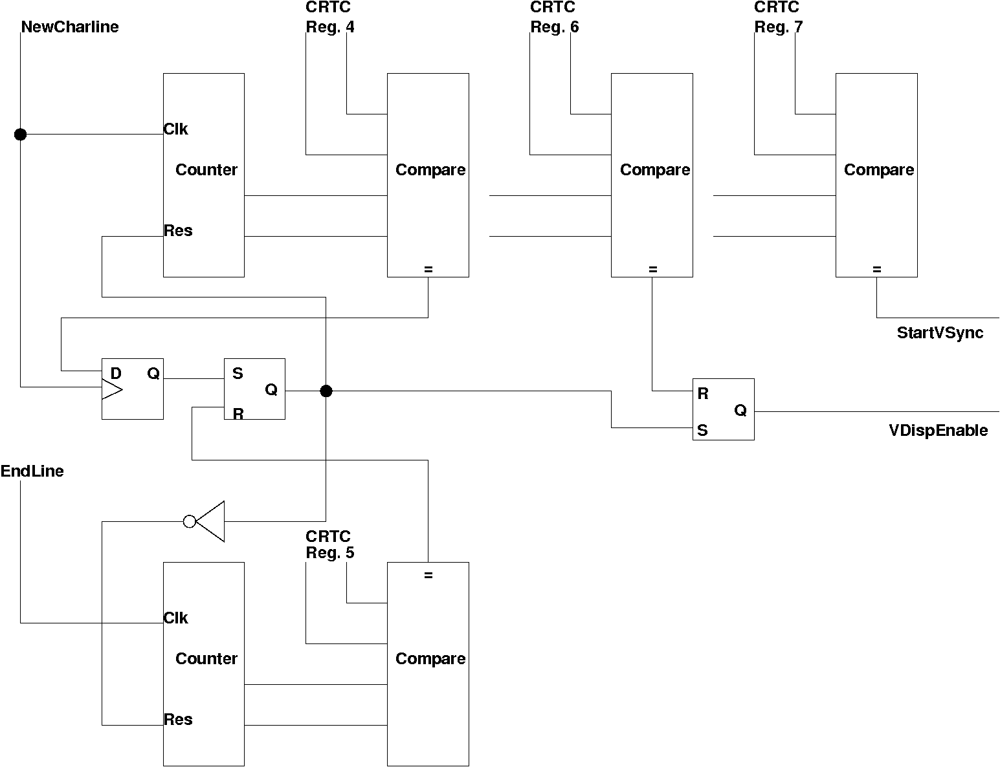
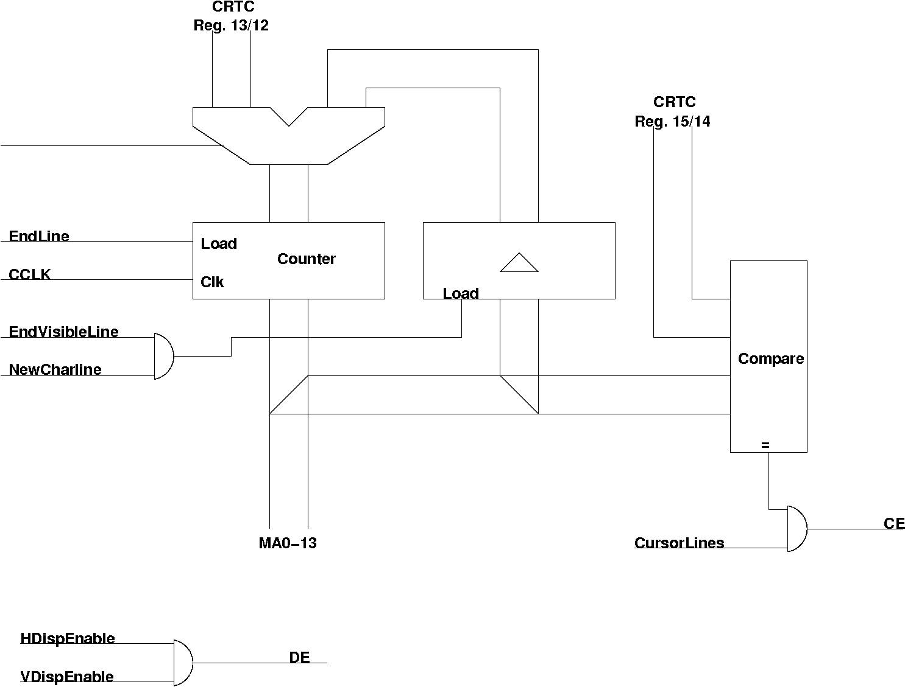

The CRTC internals
I have deduced from the timing measurements done with the test programs an internal structure. The CRTC basically works with compare elements that only compare for equality. Thus, by writing values lower than the current counter, it is possible to do some tricks to the CRTC.
Of course only after I derived the structure myself, I found this diagram of the 6845 internal structure... Also I have documented the differences between the different CRTC models in the diffs page diffs.txt.
{kind=link}
I have to note that my model is only an approximate model, to demonstrate the effects in the CRTC. It is not to be understood as a correct schematics.
In the following I will use the term rasterline for one go of the electron beam from the left to the right border of the screen. A characterline consists of a number of rasterlines that make up a line of characters.
The CRTC timing is different from, for example, the VIC-II timing of the C64. There the underlying timing is fixed and it even needs different chips for PAL and NTSC timings. The CRTC is much more flexible, because any timing value can be controlled by writing to the registers. Please note that the CRTC timing starts with the first rasterline of the first displayed character, not somewhere in the upper left corner of the screens border. The end of the CRTC rasterline is thus wrapped around to the left border. An overview can be seen in figure 0 (click on the image for a large view).
{kind=link}
The rasterline timing is done by the circuits in figure 1.
{kind=link}
The main counter character counter is clocked by the character clock. Starting from 0 the counter counts each character. The first comparator compares to the number of characters a line minus 1 (register 0). When this value is reached, the counter is reset to zero in the next cycle, starting a new rasterline. The character counter is 8 bit, allowing up to 256 chars per line.
The second comparator compares the counter to the number of visible characters. The output is then used to reset the HDispEnable line, i.e. disable the DE line (see below). The DE line is enabled when the counter is reset again, enabling the display output.
The EndLine pulse is used by the counter for rasterlines/char.
{kind=link}
Here a very similar mechanics is used to determine the height of a charline. The second and third are used to enable the hardware cursor (that is not used in the PET).
The next part does the vertical timing by counting character lines (and rasterlines for the adjust)
{kind=link}
Here the very same technique is assumed to be used as for the horizontal timing. In addition to that, however, the rasterline adjustment for the vertical timing needs another counter. (It is not clear, however, if not the rasterline counter for the charline is re-used for this purpose. It would mean one counter less, but the counter reset needs to be switched between register 9 and register 5).
Finally the memory counter needs to be discussed.
{kind=link}
The main memory counter is clocked by CCLK. It is loaded at the beginning of each new rasterline. When in the last rasterline of a char the character behind the visible one is reached, a second latch is loaded with the current memory pointer value - which is the first char of the next charline. From this value the counter is loaded. At the beginning of each rasterline. Only at the beginning of the screen the counter is loaded from the registers 13/12 of the CRTC. The counter, Regs 12/13 and Regs 14/15 are 14 bit long only.
One comparator compares the current memory pointer with the cursor position register. If also the cursor is in the right lines the CE, Cursor Enable output is active.
The DE output is active only when the rasterbeam is in the visible area horizontally and vertically.
The counter can count in two different modes. In the first mode the counter counts straight binary. This mode is mostly used (I have not seen any system using the second mode). The second mode is called row/column. Here the address lines MA0-7 generate an 8-bit column address and MA8-13 generate a 6-bit row address. The manual states that "extra hardware is needed to compress this addressing into a straight binary sequence in order to conserve memory". The memory access for both schemes during one frame can be seen in the next figure